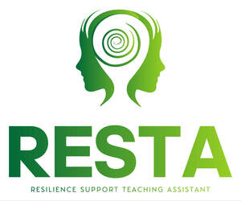

Trade Mark Journal No.2025/049 5 December 2025
UK00004298818 21 November 2025 (41,44)

- Class 41
- Health education; Education services relating to the development of childrens' mental faculties; Education services relating to health; Education and training consultancy; Training consultancy; Education and training; Training and education services; Education and training services; Vocational education and training services; Training and further training consultancy; Consultancy services relating to the education and training of management and of personnel; Education, teaching and training; Consultancy services relating to the development of training courses; Education services relating to vocational training; Business training consultancy services; Provision of training and education; Provision of education and training; Education and training in the field of business management; Training or education services in the field of life coaching; Educational and training services; Career counselling relating to education and training; Educational consultancy; Education services relating to business training; Guidance (Vocational -) [education or training advice]; Consultancy services relating to training; Education and training services in relation to business management; Teacher training services; Professional consultancy relating to education; Training services; Educational consultancy services; Academy services (Education -); Education academy services; Academy education services; Career and vocational training; Organisation of training seminars; Employment training; Provision of training courses in personal development; Career information and advisory services (educational and training advice); Postgraduate training courses relating to management studies; Educational and training services relating to healthcare; Vocational skills training; Business training services; Courses (Training -) relating to research and development; Management of education services; Management education services; Organisation of training; Postgraduate training courses; Vocational skills training (Provision of -); Instructional and training services; Practical training services; Education; Business training; Training services in the field of project management; Courses for the development of consulting skills; Organisation of training courses relating to design; Consultancy services relating to the analysis of training requirements; Vocational education; Educational services for providing courses of education; Training courses; Courses (Training -) relating to management; Education services; Education and instruction services; Education and training in the field of music and entertainment; Educational certification services, namely, providing training and educational examination; Educational services relating to sales training; Education academy services for teaching acting; Arrangement of training courses in teaching institutes; Educational and training services relating to sport; Provision of training courses; Training courses (Provision of -); Recreation and training services; Providing courses of training; Coaching [training]; Providing training courses on business management; Organisation of seminars relating to education; Organisation of seminars relating to training; Teaching and training in business, industry and information technology; Provision of training services for business; Education and training in the field of occupational health and safety; Training services relating to finance; Provision of training services for industry; Training in the field of business management; Training services relating to business management; Providing of training, teaching and tuition; Residential training courses; Advisory services relating to training; Personal development training; Conducting of educational courses in business management; Organising of education seminars; Personal training services; University education services; Courses (Training -) relating to science.
- Class 44
- Mental health services; Psychological care; Psychological counseling; Psychological counselling; Psychological counseling of staff.
Brimstone Psychology Limited